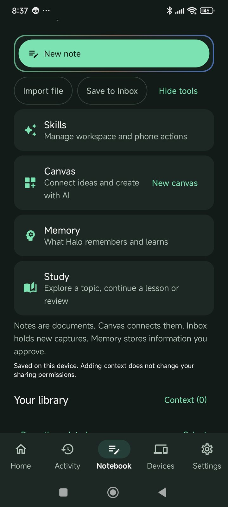
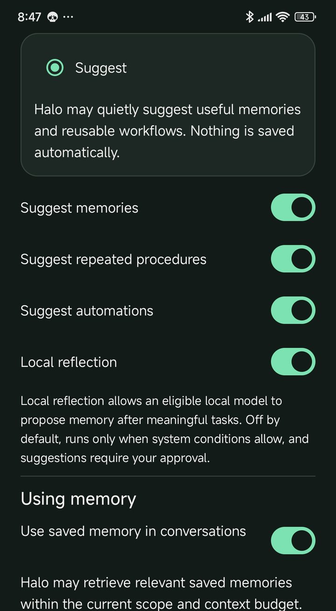
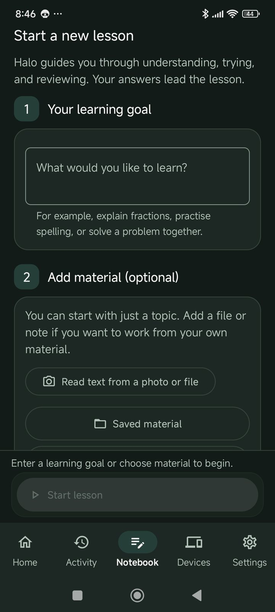

Home / Notes, Canvas & Study
Your work stays yours.
A Notebook for everything you keep, a Canvas for thinking in space, memory you approve, and lessons that go at your pace. Halo helps — and asks before it changes anything.
One place for notes, files and conversations.
Write notes, import PDFs and photos, save a useful chat, or drop a quick capture into your Inbox. Search finds it all.
- Notes
- Documents you write and edit — by keyboard or by voice.
- Files
- PDFs, images and documents, kept on your phone.
- Inbox
- New captures wait here until you sort them.
- Context
- Choose which notes Halo may use for an answer. Adding context doesn’t change what you share.

Think in space. Halo suggests; you decide.
Put notes, images and files on a canvas, group them and draw connections. When Halo suggests a change, it shows up as a dashed draft — nothing is saved until you choose Keep.
Note
Basil experimentThree pots, different hours of light.Halo suggestion · draft
Link: more light, taller plantPot C had the most light and grew tallest.
Drafts look different on purpose.
Dashed and labelled while they’re suggestions; solid only after you keep them. You can always tell your work from Halo’s ideas.
Available in the alphaNothing is remembered without you.
Halo can suggest things worth remembering — a preference, a routine. Each suggestion waits for your yes. You can see, edit or forget anything it remembers.
- Suggestions
- Off until you turn them on. Each one needs your approval.
- Local reflection
- Off by default. When on, it runs on your phone only.
- Cloud
- A provider you chose receives saved memory only when your settings allow it.

Learn it, don’t just get the answer.
Choose a topic — or your own notes, a PDF or a photo of a page. Halo explains, you try, and you review later. Calm, no points, no streaks.
Available · growing
A lesson, one step at a time
- 1Choose what to learnType or say a topic, or start from a note, file or photo.
- 2Hear it explainedShort, clear explanations — read aloud if you like.
- 3Try it yourselfAnswer in your own words. Ask for a hint, not the answer.
- 4ReviewPractice cards join your review only when you choose.
- 5Go deeperExplain it back, or follow a related question.

HALO PRODUCT FLOW
Practice in small stepsThe practice-card state is documented but needs a physical-device capture.

HALO PRODUCT FLOW
Review what you've learnedThe review flow is being refined; a current build screenshot is pending.